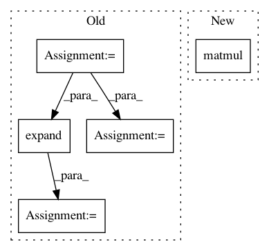

91b0d220c8e816766fd4565e1d2f5115d3afbefe,gpytorch/lazy/lazy_tensor.py,LazyTensor,evaluate,#LazyTensor#,408
Before Change
if num_rows < num_cols:
eye = torch.eye(num_rows, dtype=self.dtype, device=self.device)
if batch_mode:
eye = eye.unsqueeze(0).expand(batch_size, num_rows, num_rows)
return self.transpose(1, 2).matmul(eye).transpose(1, 2).contiguous()
else:
return self.t().matmul(eye).t().contiguous()
else:
eye = torch.eye(num_cols, dtype=self.dtype, device=self.device)
if batch_mode:
eye = eye.unsqueeze(0).expand(batch_size, num_cols, num_cols)
return self.matmul(eye)
def evaluate_kernel(self):
After Change
if num_rows < num_cols:
eye = torch.eye(num_rows, dtype=self.dtype, device=self.device)
eye = eye.expand(*self.batch_shape, num_rows, num_rows)
return self.transpose(-1, -2).matmul(eye).transpose(-1, -2).contiguous()
else:
eye = torch.eye(num_cols, dtype=self.dtype, device=self.device)
eye = eye.expand(*self.batch_shape, num_cols, num_cols)
In pattern: SUPERPATTERN
Frequency: 3
Non-data size: 5
Instances
Project Name: cornellius-gp/gpytorch
Commit Name: 91b0d220c8e816766fd4565e1d2f5115d3afbefe
Time: 2018-10-12
Author: gpleiss@gmail.com
File Name: gpytorch/lazy/lazy_tensor.py
Class Name: LazyTensor
Method Name: evaluate
Project Name: cornellius-gp/gpytorch
Commit Name: 60a342edc8b501802135df44869353cc8604d838
Time: 2018-01-11
Author: gpleiss@gmail.com
File Name: gpytorch/kernels/rbf_kernel.py
Class Name: RBFKernel
Method Name: forward
Project Name: allenai/allennlp
Commit Name: bbfbfce5c8c18b39d541d912ffb11182f7d06dfd
Time: 2017-08-06
Author: markn@allenai.org
File Name: allennlp/modules/similarity_functions/linear.py
Class Name: LinearSimilarity
Method Name: forward